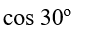
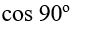

Question 1
What
is the vertex of f(x) = x
2
+ 4x + 2?
Select one:
(2,
2)
(–
2, – 2)
(–
2, 2)
(2, – 2)
None of these
Question 2
If
an ant is 100 feet away from a tree growing straight up, and the ant has to
look up at an angle of 68 degrees to see the top of the tree, how tall is the
tree? Select the closest answer.
Select one:
200
feet
140
feet
80
feet
20
feet
10
feet
Question 3
Question 4
What is the solution of 2x – y = 5, -8x + 4y = 2?
Select one:
(2, -1)
(-1, 2)
(0, -5)
There is no solution
None of these
Question 5
If I invest $10,000 at 5% compounded yearly, how much will I have in 8 years? Choose the closest answer.
Select one:
$5,000
$10,000
$15,000
$20,000
$25, 000
Question 6
What
is the exact value of sin (15 degrees)?
Select one:
.380
sqrt
(2 – sqrt(3)) / 2
sqrt
(2 + sqrt (3)) / 2
.350
Impossible
Question 7
The horizontal asymptotes of
 = \frac{5x^{3} - 10 }{10x^{2} - 12x +20}") are:
are:
Answer
Question 8
Solve the system: y = x 2 + 4x – 5, y = 0
Select one:
(0, -5) and (1, 1)
(4, 4) and (-5, -5)
(1, 0) and (-5, 0)
No solution
None of these
Question 9
Solve the system: y = x 2 + 7, y = 4x + 3
Select one:
(0, 7)
(0, 7) and (0, 3)
(2, 11)
No solution
None of these
Question 10
What is the exact value of sin (22.5 degrees)?
Select one:
.383
sqrt (2)
sqrt (2 – sqrt(2)) / 2
sqrt ((2 + sqrt (2)) / 4)
Impossible
Question 11

What does the above graph represent?
Answer
Question 12

Answer
Question 13
The vertical asymptotes of
 = \frac{x - 1}{x^{2} + 4x + 3}") are:
are:
Answer
Question 14
 are:
are:
Answer
Question 15
Solve the system: y = x 2 – 5, y = 2x - 2
Select one:
(3, -1)
(-1, 3)
(3, 4) and (-1, 2)
(-1, -4) and (3, 4)
None of these
Question 16

Answer
Question 17
The half-life of carbon 14 is 5,730 years. Approximately , how old is a bone that has 70% of its original carbon 14?
Select one:
7,500 years
7,000 years
6,500 years
6,000 years
Less than 6,000 years
Question 18
Question 19
On a circle of radius 2, center (0, 0), find the x and y coordinates at angle 270 degrees (or 3π/2 in radian measure).
Select one:
(2,
–2)
(2,
0)
(0,
–2)
(0, 2)
(2, 2)
Question 20
Solve the system: 3x – 2y = 10, 5x + 3y = 23
Select one:
(0, -5)
(4, 1)
This system is dependent
No solution
None of these
Question 21
What is the vertex of f(x) = x 2 + 3x + 2?
Select one:
7
(0, 2)
(-3/2, -1/4)
-3/2
None of these
Question 22
Solve the system: 2x + y = 6, -2x + 3y = 5
Select one:
(2, 2)
(11/4, ½)
(13/8, 11/4)
No solution
None of these
Question 23
Solve the system: 2x – y = 4, x + y = 5
Select one:
x = 3
(2, 3)
(3, 2)
There is no solution
None of these
Question 24
Solve the system: 2x + 3y = 7, 3x - 5y = 1
Select one:
(2, 1)
(1, 2)
(0, 0)
There is no solution
None of these
Question 25
Solve the system: y = x 2 – 7, y = x - 7
Select one:
x = 0
(0, -1)
(0, -7)
(0, -7) and (1, -6)
None of these
Question 26
Solve the system (domain is all real numbers): y = x
3
+ 5, y = x + 5
Select one:
(0, 5), (0, 6), (– 1, 4)
(0, 5), (1, 6), (0, 4)
(0, 5), (1, 6), (– 1, 4)
No solution
None of these
Question 27
If f(x) = 3x +2 and g(x) = x -4, (f/g)(4) is:
Select one:
Undefined
0
14
(3, 2, 4)
None of these
Question 28
What is the exact value of sin (120 degrees)?
Select one:
½
.866
√3/2
-1/2
None of these
Question 29
Solve the system: x + y + z = 3, 2x – y = 3
Select one:
(y , 2x -3, 6 - 3x)
(x , 2x -3, 6 - 3x)
(z, 2x -3, 6 - 3x)
No solution
None of these
 = 2x^{3} + 6x + 10")
 (x)")


Question 31
Solve the system: y = e
3x
, and y = 1/e.
Select one:
(1/3, e)
(1/3, e
-1
)
(–1/3, e
-1
)
No solution
None of these
Question 32
Solve the system: 2x + 3y = 7, 3x - 5y = 1
Select one:
(2, 1)
(1, 2)
(0, 0)
There is no solution
None of these
Question 33
The
graph of y = –2 sin (x – 2) + 1 has amplitude of:
Select one:
0
1
2
3
4
Question 34
What is the period of y = 3cos ( 4x + π/2) + 5?
Select one:
π/4
π/2
π
2π
–π
Question 35

For the above graph, which one of the following statements is correct?
Answer
Question 36
Solve
for x: (1/3)
x
= 81
Select one:
4
–2
3
–4
None of these
Question 37

Answer



Question 38
Answer


Question 39
 are:
are:
Answer
Question 40
Solve the system: x = y
2
+ 4y – 5, x = 0.
Select one:
(0, –5) and (1, 1)
(4, 4) and (–5, –5)
(0, 1) and (0, –5)
No solution
None of these